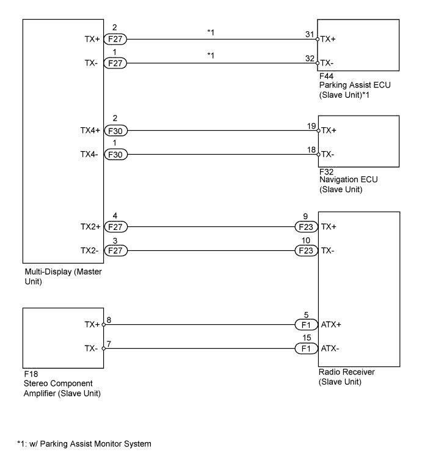
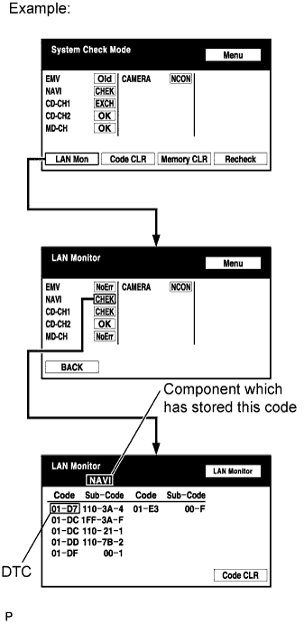
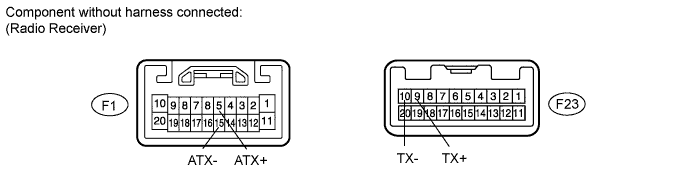

DTC 01-D6 No Master |
DTC 01-D7 Connection Check Error |
| DTC No. | DTC Detection Condition | Trouble Area |
| 01-D6*1 | When either of the following conditions is met:
|
|
| 01-D7*2 | When either of the following conditions is met:
|

| 1.CHECK MULTI-DISPLAY POWER SOURCE CIRCUIT |
Refer to the Multi-display Power Source Circuit (Click here).
If the power source circuit is operating normally, proceed to the next step.
| NEXT | |
| 2.IDENTIFY COMPONENT WHICH HAS STORED THIS CODE |
 |
Enter the diagnostic mode.
Press the "LAN Mon" switch to change to "LAN Monitor" mode.
Identify the component which has stored this code.
| Display | Component |
| AUDIO | Radio receiver |
| DSP-AMP | Stereo component amplifier |
| EMV | Multi-display |
| NAVI | Navigation ECU |
| CAMERA-C | Parking assist ECU |
| NEXT | |
| 3.CHECK POWER SOURCE CIRCUIT OF COMPONENT WHICH HAS STORED THIS CODE |
Inspect the power source circuit of the component which has stored this code.
If the power source circuit is operating normally, proceed to the next step.
| Component | Proceed to |
| Radio receiver (AUDIO) | Radio receiver power source circuit (Click here) |
| Stereo component amplifier (DSP-AMP) | Stereo component amplifier power source circuit (Click here) |
| Multi-display (EMV) | Multi-display power source circuit (Click here) |
| Navigation ECU (NAVI) | Navigation ECU power source circuit (Click here) |
| Parking assist ECU (CAMERA-C) | Parking assist ECU power source circuit (Click here) |
| NEXT | |
| 4.INSPECT RADIO RECEIVER ASSEMBLY |

Disconnect the F1 and F23 receiver connectors.
Measure the resistance according to the value(s) in the table below.
| Tester Connection | Condition | Specified Condition |
| F1-5 (ATX+) - F1-15 (ATX-) | Always | 60 to 80 Ω |
| F23-9 (TX+) - F23-10 (TX-) | Always | 60 to 80 Ω |
|
| ||||
| OK | |
| 5.CHECK HARNESS AND CONNECTOR (MULTI-DISPLAY - COMPONENT WHICH HAS STORED THIS CODE) |
Check the AVC-LAN circuit between the multi-display and the component which has stored this code.
Disconnect all connectors between the multi-display and the component which has stored this code.
Check for an open or short in the AVC-LAN circuit between the multi-display and the component which has stored this code.
|
| ||||
| OK | |
| 6.REPLACE COMPONENT WHICH HAS STORED THIS CODE |
Replace the component which has stored this code with a normal one and check if the same problem occurs again.
|
| ||||
| OK | ||
| ||